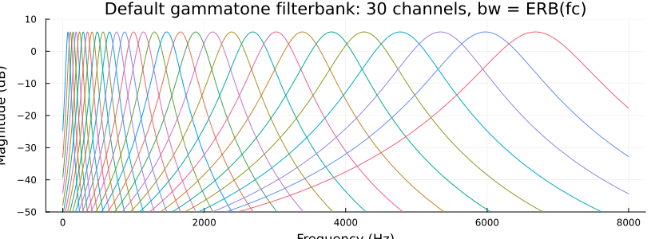
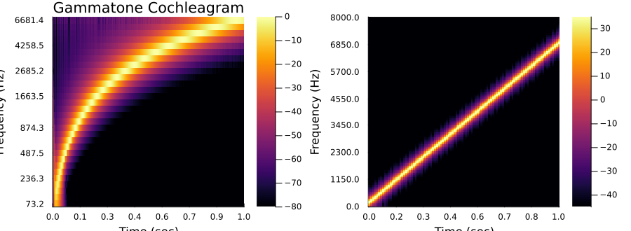
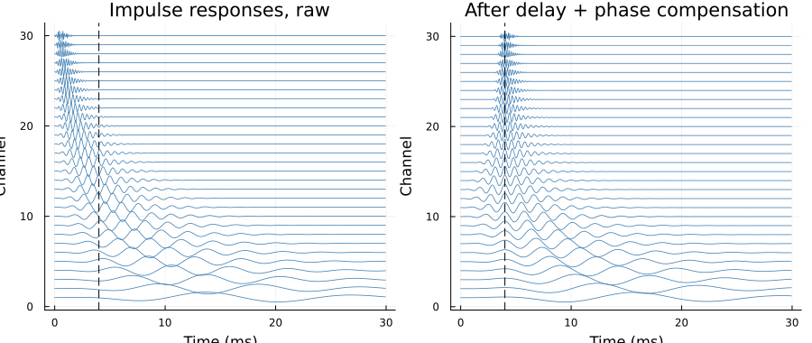

Gammatone Filterbank
Auditory-model time-frequency analysis after Hohmann (2002). Each channel of the bank is a complex gammatone filter — a cascade of $γ$ (= order, default 4) identical one-pole complex filters
\[H(z) = k\,(1 - ã z^{-1})^{-γ}, \qquad ã = λ e^{iβ}, \quad β = \frac{2π f_c}{f_s},\]
whose output is a complex subband signal: its magnitude is the band's envelope and its angle the fine structure. The normalisation $k = 2(1-λ)^{γ}$ places the peak of the magnitude response exactly at the centre frequency with gain exactly 2, so that for a real input the subband magnitude carries the band's amplitude and the real part is the bandpass-filtered signal itself. The impulse response is known in closed form, $h[n] = k\binom{n+γ-1}{γ-1}\,ã^{\,n}$ — that closed form is what gammatone_impulse_response evaluates analytically, filter_impresp measures the same response by running an impulse through the filtering kernel, and the two agree to machine precision.
Bandwidths default to the auditory equivalent rectangular bandwidth $\mathrm{ERB}(f_c) = 24.7 + f_c/9.265$ Hz (erb); they can be scaled (bw_scale) or set outright (bw, per filter or per channel), and are realised either as the filter's own equivalent rectangular bandwidth (the default; Hohmann's Eqs. 13–17) or with the band edges placed a given number of dB below the peak (attenuation_db, the explicit form used by the reference implementations). Centre frequencies are uniformly spaced on the ERB-rate scale with one channel pinned exactly at a base frequency — see erbfreq_array for the anchoring logic.

Analyses
At the array level, signals are filtered with filt — DSP.jl's filtering verb, which the package extends with methods for its filter and filterbank types (one complex subband per row for a bank; filt! is the in-place form; the computation runs in the signal's precision). On top of that, gammatone_analysis returns the complex subbands of a signal as a timefreq with per-sample time resolution (no framing), and gammatone_cochleagram returns their envelope, floored like specgram so dB scaling is always well defined. Both follow the package's comp() convention for bare-array output and plot through the existing recipes:
using TimeFrequencyAnalysis, Plots
s = signal(x, 16000) #a signal container at 16 kHz
fb = gammatone_filterbank(16000.0) #30 ERB-spaced channels, 70 Hz – 6.7 kHz
cg = gammatone_cochleagram(s, fb) #envelope timefreq at the full signal rate
plot(amp2db(cg); clims = (-80, 0)) #:ice by default - see Plotting for why, and how to change it
The cochleagram of a linear chirp (left) against the specgram of the same signal (right): the chirp bends on the cochleagram because its frequency axis is uniform in ERB-rate rather than in Hz, and the slow low channels smear time where the fast high channels track it sharply.
Delays and alignment
Gammatone channels are slow at low frequencies and fast at high ones, and two delay notions matter when interpreting or aligning their outputs: the group delay at the centre frequency (group_delay, ≈ order/(2πb)) and the slightly earlier peak of the impulse-response envelope (envelope_delay, ≈ (order-1)/(2πb)), which is what alignment across channels targets. summed_resp shows the bank's summed frequency response with and without alignment.
That alignment is gammatone_delay: per-channel integer delays and unit phase factors, measured from the bank's impulse responses exactly as in the reference implementations, applied with compensate/compensate! or folded into the analyses with their align keyword. Channels too slow to reach their envelope peak within the target delay (normal at the bottom of the bank) are left unshifted. After compensation the channels' envelopes and fine structure meet at the target delay, and the summed subbands reconstruct an impulse there — the basis of the resynthesis (mixer + summation) stage planned as the next iteration of this framework.
d = gammatone_delay(fb; delay = 0.004) #4 ms alignment target
Ya = gammatone_analysis(s, fb; align = 0.004) #aligned complex subbands
Function reference
TimeFrequencyAnalysis.gammatone_filter — Type
gammatone_filter{T<:AbstractFloat}
gammatone_filter(fs, fc; bw = nothing, bw_scale = 1, order = 4)
gammatone_filter(fs, fc, bw, attenuation_db; order = 4)A complex gammatone filter of order order (default 4) at centre frequency fc Hz for sampling rate fs Hz, after Hohmann (2002): a cascade of order one-pole complex filters with combined transfer function $H(z) = k(1 - ãz^{-1})^{-order}$ and pole $ã = λe^{iβ}$, $β = 2πf_c/f_s$. The magnitude response peaks at fc with gain exactly 2 ($k = 2(1-λ)^{order}$), so that for a real input the complex output carries the amplitude of the input band: its magnitude is the band envelope and its real part the bandpass signal.
The keyword constructor sets the filter's equivalent rectangular bandwidth to bw_scale*bw Hz, where bw defaults to the auditory bandwidth erb(fc), via the bandwidth-to-damping relation of Hohmann (2002) Eqs. 13–17 (see a_gamma). The 4-argument form instead places the band edges fc ± bw/2 exactly attenuation_db dB below the peak (Hohmann 2002, Eqs. 11–12 — the explicit-bandwidth form of the reference implementations, whose default attenuation is 3 dB). The two conventions differ: for a 4th-order filter the −3 dB width is ≈ 0.886 × the equivalent rectangular bandwidth.
Fields
fs::T: sampling rate in Hzfc::T: centre frequency in Hzorder::Int: filter order (number of cascaded one-pole sections)bw::T: design bandwidth in Hz (after default/override and scaling)b::T: envelope damping in Hz (the impulse-response envelope decays as $e^{-2πbt}$)coef::Complex{T}: the pole $ã = λe^{iβ}$norm::T: the normalisation $k = 2(1-λ)^{order}$
TimeFrequencyAnalysis.gammatone_impulse_response — Function
gammatone_impulse_response(gf::gammatone_filter; dur = nothing)Impulse response of the gammatone filter as a tuple (t, h): sample times t in seconds and the complex response h, computed analytically from the exact closed form $h[n] = k\binom{n+order-1}{order-1}ã^{\,n}$ (no filtering involved, so the impulse response is available directly from the design; filter_impresp is the measured counterpart, which this closed form matches to machine precision). abs.(h) is the response envelope and real.(h) the real gammatone impulse response. The duration defaults to the time the envelope takes to decay to −80 dB relative to its peak; pass dur in seconds to override.
DSP.filt — Method
filt(gf::gammatone_filter, x)
filt!(y, gf::gammatone_filter, x)Filter the real signal array x with the gammatone filter gf and return the complex subband signal: abs. of the output is the band envelope and real. the bandpass-filtered signal (see gammatone_filter for why the gain-2 normalisation makes both carry the input band's amplitude). The cascade is applied as its order one-pole recursions $w_j[n] = w_{j-1}[n] + ãw_j[n-1]$, order complex multiply–adds per sample. The in-place form fills the complex vector y (same length as x) and returns it, allocation free.
The computation runs in the signal's precision: the output element type is Complex of the element type of x, whatever precision the filter is stored at.
TimeFrequencyAnalysis.gammatone_filterbank — Type
gammatone_filterbank{T<:AbstractFloat}
gammatone_filterbank(fs; fmin = 70, fmax = min(6700, 0.45fs), base_frq = 1000,
filters_per_erb = 1, order = 4, bw = nothing, bw_scale = 1)
gammatone_filterbank(fs, fcs; order = 4, bw = nothing, bw_scale = 1)A bank of gammatone_filters sharing the sampling rate fs. The centre frequencies come from erbfreq_array — uniformly spaced on the ERB-rate scale between fmin and fmax with a channel pinned exactly at base_frq (see erbfreq_array for the anchoring logic) — or are given explicitly as the vector fcs. The default fmax is the reference implementation's 6700 Hz, capped at 0.45fs where the design assumptions end.
Bandwidths follow the single-filter rules per channel: each defaults to its auditory bandwidth erb(fc); bw overrides that with one explicit bandwidth for every channel (scalar — a constant-bandwidth bank) or one per channel (vector matching the number of channels); bw_scale multiplies whichever is in effect. By default the bandwidth is realised as the filter's equivalent rectangular bandwidth (the gammatone_filter keyword form); passing attenuation_db instead places every channel's band edges fc ± B/2 that many dB below its peak (the explicit-attenuation form, as in pyfilterbank's banks). Note that channel density (filters_per_erb) and bandwidth are independent: one packs more filters, the other widens each of them.
Fields
fs::T: sampling rate in Hzfcs::Vector{T}: centre frequency of each channel in Hzfilters::Vector{gammatone_filter{T}}: the channel filters
DSP.filt — Method
filt(fb::gammatone_filterbank, x)
filt!(Y, fb::gammatone_filterbank, x)Filter the real signal array x with every channel of the filterbank, returning the complex subband matrix with one row per channel: Y[i,:] is x filtered by fb.filters[i], and size(Y) == (length(fb.fcs), length(x)). The in-place form fills the preallocated matrix Y and returns it. As for the single-filter methods, the computation runs in the signal's precision.
TimeFrequencyAnalysis.gammatone_analysis — Function
gammatone_analysis([comp(),] s::signal, fb::gammatone_filterbank)
gammatone_analysis([comp(),] s::signal [; <filterbank keyword arguments>])
gammatone_analysis([comp(),] x, fs [; <filterbank keyword arguments>])Complex gammatone filterbank analysis of the signal s (or of the signal in array x with sampling rate fs): every channel of fb applied to the signal, giving a timefreq with complex components in which row i is the subband signal of the channel centred at fcs[i], at the signal's full sampling rate (the time axis is (0:N-1)/fs — per-sample resolution, no framing). The magnitude of each row is the band envelope and its angle the fine structure; see gammatone_cochleagram for the envelope form. With the comp() argument only the complex component matrix is returned.
When no filterbank is supplied, one is designed from the keyword arguments via gammatone_filterbank(fs; ...). Passing align (a target delay in seconds) folds delay and phase compensation into the analysis: the subbands are aligned with compensate! using gammatone_delay(fb; delay = align).
TimeFrequencyAnalysis.gammatone_cochleagram — Function
gammatone_cochleagram([comp(),] s::signal, fb::gammatone_filterbank)
gammatone_cochleagram([comp(),] s::signal [; <filterbank keyword arguments>])
gammatone_cochleagram([comp(),] x, fs [; <filterbank keyword arguments>])Cochleagram of the signal s (or of the signal in array x with sampling rate fs): the envelope (magnitude) of the gammatone_analysis, as a real timefreq with one row per channel at the signal's full sampling rate. A floor of eps(T) is added to every component, exactly as in specgram, so logarithms of the cochleagram are always well defined (amp2db(gammatone_cochleagram(s)) plots directly). With the comp() argument only the envelope matrix is returned.
When no filterbank is supplied, one is designed from the keyword arguments via gammatone_filterbank(fs; ...). Passing align (a target delay in seconds) delay- and phase-compensates the subbands before the envelope is taken, so the channel envelopes are time aligned (see gammatone_delay).
TimeFrequencyAnalysis.group_delay — Function
group_delay(gf::gammatone_filter, f)
group_delay(gf::gammatone_filter)Group delay of the gammatone filter in samples (divide by fs for seconds). The one-argument form returns the closed form at the centre frequency, $τ_g(f_c) = order⋅λ/(1-λ)$ samples (≈ the analogue $order/(2πb)$ seconds). The grid form computes $τ(f) = -dφ/dθ$ numerically from the unwrapped phase response at each frequency of f in Hz, by central differences — the grid must be dense enough that the phase moves by less than π between neighbouring points.
Note that the group delay at fc is not the delay of the envelope maximum: the asymmetric gammatone envelope peaks earlier (at ≈ $(order-1)/(2πb)$ seconds against the group delay's $order/(2πb)$) — see envelope_delay.
TimeFrequencyAnalysis.envelope_delay — Function
envelope_delay(gf::gammatone_filter)Sample index (0-based, so also the delay in samples) of the maximum of the impulse-response envelope of gf, computed from the closed-form impulse response (gammatone_impulse_response). This is the per-channel delay that the alignment stage of the Hohmann framework compensates. The measured value equals the exact discrete peak position $⌈(order⋅λ-1)/(1-λ)⌉$, which sits a sample or two before the analogue prediction $(order-1)/(2πb)$ seconds — the discrete binomial envelope peaks slightly earlier than its continuous-time counterpart.
envelope_delay(fb::gammatone_filterbank)Envelope delay in samples of every channel of the filterbank, as a Vector{Int} in channel order — the per-filter envelope_delay applied across the bank. Delays fall with increasing centre frequency, so the first channel is the slowest and sets default_align.
TimeFrequencyAnalysis.summed_resp — Function
summed_resp(fb::gammatone_filterbank, f; delay = nothing)Complex sum of the channel frequency responses of the filterbank at each frequency of f in Hz: the transfer function of analysing with the bank and summing the raw channel outputs. Because the channels carry very different delays and phases, the uncompensated sum interferes and its magnitude ripples deeply.
With delay — a gammatone_delay, or a target delay in seconds from which one is built — the sum is taken after per-channel compensation, $Σ_k c_k e^{-iθΔ_k} H_k(e^{iθ})$: the response of analysing, aligning and summing. This is far flatter; the residual ripple is what the mixer gains of the synthesis stage (v2) remove.
TimeFrequencyAnalysis.gammatone_delay — Type
gammatone_delay{T<:AbstractFloat}
gammatone_delay(fb::gammatone_filterbank; delay = 0.004)
gammatone_delay(fb::gammatone_filterbank; delay = :auto)Per-channel delay and phase compensation for a filterbank, computed as in gfb_delay_new (Hohmann 2002, §4): the goal is that after compensation every channel's response to an impulse peaks — envelope and fine structure together — at one common target delay (in seconds, default 4 ms; nd = round(delay*fs) samples).
A unit impulse is sent through the bank and each channel's envelope maximum is located within the window [0, nd]; the channel is then delayed by the remaining Δ_k = nd - n_peak(k) samples, and rotated by the unit phase factor $c_k = i|s_k|/s_k$, where $s_k$ is the complex slope of the impulse response at the envelope maximum. At an interior maximum this rotation makes the channel real and positive at the target instant (at the envelope peak the slope is purely the fine structure's, $i$ times the peak value's phase); channels too slow to peak within the window — normal at the bottom of the bank — sit at the window edge, get Δ_k = 0, and remain partially misaligned, which the reference design accepts.
delay = :auto takes the target from default_align, the smallest value for which no channel is too slow to peak within the window. The fixed 4 ms default is a poor target for a low-frequency bank — a channel at fc = 77 Hz with a 66 Hz bandwidth has an envelope delay of about 7.4 ms — so prefer :auto whenever the bank reaches below a few hundred Hz.
Apply with compensate/compensate!, or pass align to the analyses directly.
Fields
fs::T: sampling rate the compensation was built for, in Hznd::Int: target delay in samplesdelays::Vector{Int}: per-channel delay $Δ_k$ in samplesphase_factors::Vector{Complex{T}}: per-channel unit phasors $c_k$
TimeFrequencyAnalysis.default_align — Function
default_align(fb::gammatone_filterbank)Alignment target in seconds for fb: the smallest delay at which every channel's envelope maximum falls strictly inside the search window that gammatone_delay uses, namely $(\max_k τ_k + 1)/f_s$ where $τ_k$ is the channel's envelope_delay in samples.
This is the target align = :auto and delay = :auto resolve to. It exists because a fixed target cannot serve every bank: a channel slower than the window sits at its edge, keeps $Δ_k = 0$ and stays misaligned, which is what gammatone_delay's 4 ms default does to any bank reaching below a few hundred Hz (an fc = 77 Hz, 66 Hz-wide channel peaks at about 7.4 ms). Deriving the target from the bank removes the failure mode instead of accepting it.
The cost of a larger target is latency, not accuracy: every channel is delayed to the common instant, so the compensated output starts that much later (see compensation_lead).
TimeFrequencyAnalysis.compensation_lead — Function
compensation_lead(d::gammatone_delay)Number of leading samples of a compensated subband matrix that compensate! zero-fills in at least one channel, namely maximum(d.delays). Everything before this index is fabricated rather than measured, so an analysis that must not see invented samples should drop that many columns — which is what trim = true on compensate does.
TimeFrequencyAnalysis.compensate — Function
compensate(Y::AbstractMatrix, d::gammatone_delay; trim = false)
compensate(tf::timefreq, d::gammatone_delay; trim = false)Apply the per-channel delay and phase compensation d to the complex subband representation returned by gammatone_analysis: $ỹ_k[n] = c_k y_k[n - Δ_k]$, zero-filled at the start with the tail truncated, so the output has the same size as the input. Returns an aligned copy — for a timefreq input, a new timefreq with the same signal, frequency and time axes and the title marked accordingly (see compensate! for the in-place matrix form). Compensation needs the complex analysis output; the cochleagram has already discarded the phase.
With trim = true the first compensation_lead(d) columns — the ones holding zero-fill in at least one channel — are dropped from every channel, so no analysis downstream sees a fabricated sample. Every channel loses the same columns, which keeps the matrix rectangular and the channels aligned with each other. For a timefreq the time axis is trimmed to match rather than re-zeroed, so the result still refers to the same instants as the input. Only the copying methods can trim; compensate! cannot shrink its argument.
Keyword Arguments
trim: Drop the zero-filled leading columns [Default =false]
Throws
ErrorExceptioniftrim = trueand the input is no longer than the lead to be dropped.
TimeFrequencyAnalysis.compensate! — Function
compensate!(Y, d::gammatone_delay)In-place form of compensate: apply the per-channel delay and phase compensation to the complex subband matrix Y (one channel per row) and return it.
References
- V. Hohmann (2002), "Frequency analysis and synthesis using a Gammatone filterbank", Acta Acustica united with Acustica 88(3), 433–442.
- B. R. Glasberg, B. C. J. Moore (1990), "Derivation of auditory filter shapes from notched-noise data", Hearing Research 47, 103–138.
- Reference implementations this one is cross-validated against: Hohmann's original MATLAB (
gfb_*, https://zenodo.org/records/2643400), the Auditory Modeling Toolbox (hohmann2002*, https://www.amtoolbox.org), and pyfilterbank (https://github.com/SiggiGue/pyfilterbank).